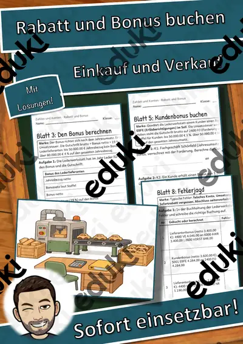
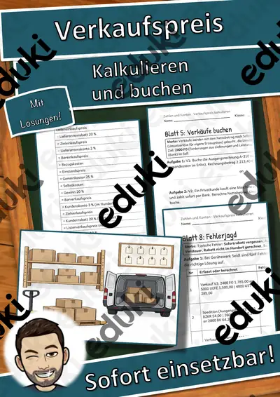

Der Weihnachtsbasar – planen, kalkulieren, verkaufen – Lesespurgeschichte mit Rätselaufgaben (Klasse 6)
Der Weihnachtsbasar – planen, kalkulieren, verkaufen – Lesespurgeschichte Wirtschaft (Klasse 6)Schick deine Klasse auf eine Lesespur durch einen Adventsbasar! Jana und Can aus der 6b machen mit ihrer Klasse beim Adventsbasar der Mittelschule Talheim mit – mit einem eigenen Verkaufsstand, den sie von der ersten Idee bis zur Abrechnung selbst führen. Klassenleiterin Frau Ostermeier begleitet sie vom Klassenzimmer, wo Idee und Budget festgelegt werden, in den Materialraum zum Einkaufen, in die Schulküche zum Backen und zur Preistafel, an der die Klasse ihre Preise kalkuliert. An der Plakatwand entsteht die Werbung, am Verkaufsstand wartet eine Rechenaufgabe, am Nachbarstand gibt es Konkurrenz, an der Restekiste sinkt die Nachfrage – und auf der Bühne rechnet die Klasse ab. Am Ende jedes Abschnitts verrät ein Hinweis den nächsten Ort auf dem Plan – nur wer genau liest, findet den Weg und sammelt alle geheimen Buchstaben zum Lösungswort.
Die perfekte Lesespur für WIRTSCHAFT UND BERUF in der 6. Klasse – ideal in der Adventszeit, zur Vorbereitung eines eigenen Klassenstands, für Vertretungsstunden und fächerübergreifend mit Deutsch und Mathematik: Sie verbindet sinnentnehmendes Lesen mit den Grundbegriffen Kosten, Preis, Einnahmen und Gewinn und dem Rechnen mit Geldbeträgen. Das Material ist SOFORT EINSETZBAR und in DREI DIFFERENZIERUNGSSTUFEN (leicht ★ / mittel ★★ / schwer ★★★) angelegt.WICHTIG: Das komplette Material ist sowohl in FARBE als auch in SCHWARZ-WEISS enthalten – ideal zum Sparen von Druckkosten.DAS IST ENTHALTEN
- Lesespurgeschichte in 3 Niveaus (leicht, mittel, schwer)
- farbiger Plan vom Schulhaus als Suchkarte
- Hörverstehen mit QR-Code zur MP3 (selbstständiges Hören mit Kopfhörern)
- vier Aufträge auf dem Weg: eine Zuordnung, ein Quiz, eine Rechenaufgabe und ein Steckbrief
- Rätselseite (Wörter-Suchsel + Fragen rund um den Weihnachtsbasar)
- Ausmalbild zum Thema
- ausführliches Lösungsblatt für die Lehrkraft
- alles zusätzlich als komplette Schwarz-Weiß-VarianteSO GEHT DIE LESESPURDie Kinder lesen ab START, finden im Text den nächsten Ort, suchen ihn auf dem Plan und lesen bei dieser Station weiter. An jeder richtigen Station gibt es einen Buchstaben. Eingeplante Sackgassen (Kakaostand, Sekretariat, Treppenhaus, Wasserspender) sind keine Stationen und dienen der Selbstkontrolle. Am Ende werden die gesammelten Buchstaben umgestellt und ergeben ein geheimes Lösungswort. (Die Lösungen sind selbstverständlich nur im Lösungsblatt für die Lehrkraft enthalten.)INHALTLICHER SCHWERPUNKTEin Verkaufsprojekt vom Plan bis zur Abrechnung: Budget, Kosten und Stückkosten, Preiskalkulation, Werbung mit einem Plakat, Verkauf und Wechselgeld, Konkurrenz und Preisvergleich, Angebot und Nachfrage, Einnahmen minus Kosten gleich Gewinn und die gemeinsame Entscheidung über den Gewinn.ABGEDECKTER LEHRPLAN (Klasse 6)
- Wirtschaft und Beruf (LehrplanPLUS Bayern, Mittelschule) – Jahrgangsstufe 6: ein Verkaufsprojekt planen und durchführen, Kosten ermitteln, Preise kalkulieren, Werbung gestalten, Einnahmen, Kosten und Gewinn abrechnen.
- Mathematik – Jahrgangsstufe 6: Rechnen mit Dezimalzahlen und Größen (Geld), Sachaufgaben.
- Deutsch – Jahrgangsstufe 6: Texte sinnentnehmend lesen; Zuhören: einem Hörtext folgen (Hörverstehen mit MP3).Geeignet für Freiarbeit, Stationenlernen, Vertretungsstunden, Wochenplan, Projekttage und als Einstieg in ein eigenes Schülerprojekt. Klassenstufe 6.
Ähnliche Materialien

Rabatt und Bonus buchen: Einkauf und Verkauf – Arbeitsheft mit Lösungen (BwR 8, Realschule Bayern)

Materialpaket Advent und Winter für die 6. Klasse: 7 Lesespurgeschichten mit Rätselaufgaben (Weihnachtsbasar, Saturnalien, Lichterfeste & mehr)

Verkaufspreis: kalkulieren und buchen – Arbeitsheft mit Lösungen (BwR 8, Realschule Bayern)

Verkauf buchen mit Umsatzsteuer – Arbeitsheft mit Lösungen (BwR 7, Realschule Bayern)

Verkauf mit Sofortrabatt buchen – Arbeitsheft mit Lösungen (BwR 8, Realschule Bayern)

Gutschrift im Verkauf: Rücksendungen buchen – Arbeitsheft mit Lösungen (BwR 8, Realschule Bayern)

Aktiengeschäfte buchen: Kauf, Dividende und Verkauf – Arbeitsheft mit Lösungen (BwR 9, Realschule)